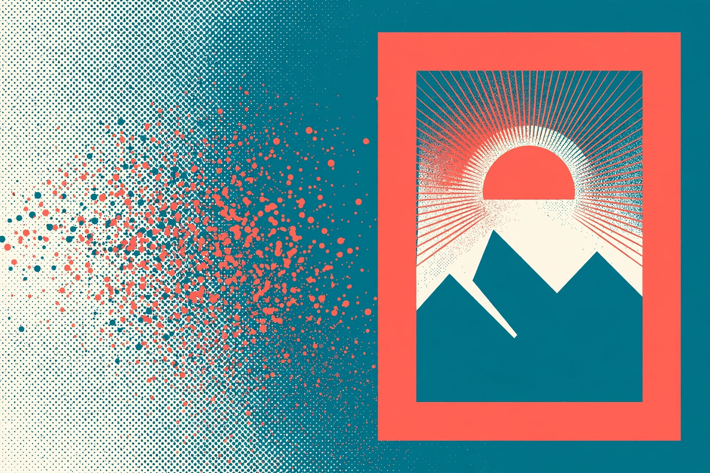

AI image generators for beginners: what they can and cannot do

Type a sentence, get a picture. AI image generators feel like magic the first time — and like a slot machine the fifth time, when the hands have too many fingers and the sign in the background is gibberish. Both impressions are normal. These tools are genuinely capable and genuinely limited, in specific, predictable ways. This guide maps both sides honestly: how a picture is made, what the best-documented tools do well today, where they still fail, and how to get a usable first image without fighting the tool.
How an image generator makes a picture, in plain English
The generator does not search a photo library and it does not collage existing pictures together. Google's research team describes its Imagen system as a diffusion model: a system that learned, from very large numbers of example images, how a pattern of random dots gradually becomes a recognisable image. To make your picture, it starts from that random pattern — visual static — and refines it step by step, guided by your words, beginning at low resolution and progressively increasing the detail until an image that never existed before appears. Two practical consequences follow. First, the same prompt rarely produces the identical image twice, because each run starts from a different random pattern. Second, the tool is predicting what a picture matching your words would look like, not remembering a real scene — which explains both its creativity and its strangest mistakes.
What they can do well
Verified against the providers' own help pages (checked 13 October 2026), the mainstream tools inside chat apps can reliably:
- Create a brand-new image from a description. OpenAI's help centre documents creating images by describing them in a conversation, or through the Images section of ChatGPT — available on all tiers, on web, iOS, and Android. Google's image generation (its Nano Banana models) is likewise built into the Gemini app and other Google products.
- Edit an existing image. You can upload a photo and describe the change — remove an object, change a background, restyle the scene — or select part of a generated image and edit just that area.
- Work in a chosen shape and style. ChatGPT Images offers an aspect-ratio picker (or you can name the shape in your prompt), and style words in the prompt — watercolour, flat illustration, photograph — steer the result strongly.
- Iterate quickly. Generation may take a few minutes for complex requests, per OpenAI, but follow-up edits happen in the same conversation: "make the sky warmer," "remove the person on the left." Your created images are saved under Images in ChatGPT so you can revisit them.
One naming note that saves confusion: OpenAI has retired the old DALL·E tool inside ChatGPT — its help centre directs everyone to ChatGPT Images instead. Older tutorials that send you looking for DALL·E menus are out of date.
Where they still struggle
- Hands, text, and fine detail. Beginner guides across the web agree on this, and it holds up: fingers merge or multiply, small text turns to nonsense lettering, and intricate patterns unravel on close inspection.
- Exact counts and exact placement. Google's researchers state plainly that these models cannot reliably produce a specific number of objects — "ten apples" — or place items exactly as a complex spatial description demands, and that as prompts grow more complex the model may drop details you asked for or add details you did not.
- Consistency across images. Ask for the same character in five scenes and you will likely get five similar strangers. Keeping one character, product, or logo identical across a series remains unreliable without specialised workflows.
- Surgical editing. OpenAI's own help concedes that in its editor, highlights are not always precise and edits may extend beyond the area you selected. Expect an edit to change a neighbourhood of the image, not a single pixel.
- Knowing what is real. The tool will happily generate a convincing picture of an event that never happened. A generated image is an illustration, never evidence.
Your first image, step by step
- Open your chat app and start a conversation. Either describe the image in an ordinary message ("Create an image of…") or open the app's Images section if it has one.
- Write a prompt with four ingredients: the subject (a red bicycle), the setting (leaning against a cottage fence), the style (soft watercolour illustration), and the shape if it matters (wide/landscape).
- Wait for the result — simple images arrive quickly; complex ones can take a few minutes.
- Inspect it like a proofreader: zoom in on hands, faces, any words, edges where objects meet, and the background. Most flaws hide at full zoom, not in the thumbnail.
- Ask for one change at a time in a follow-up message, rather than re-describing the whole scene.
- Save the version you like using the image controls (OpenAI documents Copy, Save, and Share on generated images) before experimenting further — iterations cannot always be undone.
What success looks like: the subject matches your description at a glance, a zoomed inspection shows no garbled hands or nonsense text, and the image still looks right at the size you will actually use it. If a flaw only appears at full zoom and the image will only ever be shown small, it may already be good enough.
Fixing a flawed image instead of starting over
When an image is 90 percent right, editing beats regenerating — a fresh generation is a fresh roll of the dice. Select the flawed area with the editor's selection tool if your app offers one, describe only that change ("remove the extra finger," "make the sign blank"), and accept that the edit may touch nearby pixels too, as OpenAI warns. If the same flaw survives two edit attempts, change strategy: simplify the prompt (fewer objects, hands out of frame, no text in the scene) rather than repeating it. Most "impossible" images become easy once the request stops demanding the tool's known weak spots.
A can / cannot comparison table
| Ask | Realistic expectation |
|---|---|
| An original illustration for a blog post or card | Can — a strength of every mainstream tool |
| A photo-style image of a place that exists | Can generate one — but it is invented, not a real photograph of that place |
| Your exact product, pet, or child, recognisable | Cannot reliably — uploads can be edited or restyled, but likeness drifts |
| A poster with a headline spelled correctly | Risky — text rendering has improved but still garbles; check every letter, or add text later in another app |
| Exactly seven chairs around a table | Cannot reliably — counting is a documented weakness |
| The same character across a storybook | Cannot reliably without specialised workflows |
| Removing an object from your own photo | Can — a common, well-supported edit, with some spill beyond the selected area |
Before you publish: a short rights and safety check
- Check the tool's terms for your use. Beginner guides rightly flag licensing: whether you may use a generated image commercially depends on the provider and your plan. Read the current terms before an image goes on anything you sell.
- Only upload what you have the right to edit. Restyling someone else's photograph or artwork does not make it yours.
- Be careful with real people and logos. Do not publish generated images that appear to show a real person doing something they did not do, or that borrow a company's branding — expect tools to refuse some of these requests, and treat a refusal as a boundary, not a bug.
- Label honestly where it matters. If an image could be mistaken for a real photograph of a real event, say it was AI-generated.
FAQ
Is it copying an existing picture? No — the image is generated from a random pattern guided by your prompt, not retrieved or stitched together. That said, a prompt that names a living artist's style or a protected character can still produce something you should not use commercially; the pre-publish check above applies.
Why did the same prompt give me a different image? Each generation starts from a different random pattern, so variation is built in. Save versions you like as you go.
Which tool should a beginner start with? The one already inside the chat app you use. Both ChatGPT Images and Google's Gemini image generation are documented by their makers for creating and editing images from plain descriptions, and the skills in this guide — specific prompts, zoom inspection, one change at a time — transfer between all of them.